This summary highlights the key discussions from the lecture video, with visual frames captured at important moments.
Video: https://www.youtube.com/watch?v=2fq9wYslV0A
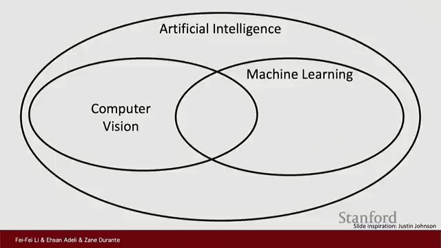
Welcome to the course CS231N, where we dive into the fascinating world of computer vision and its pivotal role within the broader field of artificial intelligence (AI). Computer vision is a critical branch of AI focused on enabling machines to interpret and understand visual data from images and videos.
One of the most significant breakthroughs in AI techniques, especially for computer vision, is deep learning. This approach has revolutionized how machines learn and recognize complex patterns in visual information.
The story of vision begins around 540 million years ago during the Cambrian Explosion, a remarkable period when many animal species rapidly emerged. It was during this time that simple eyes first appeared, marking a significant evolutionary milestone.
These early visual systems allowed animals to sense their environment more effectively, providing a crucial advantage for survival. Over time, this ability to detect light and interpret visual information contributed to the development of intelligence and more complex nervous systems.
Vision is far more than just capturing images; it involves intricate processing and interpretation of visual data.
By understanding the evolution of vision, we gain valuable perspective on its significance in modern fields like artificial intelligence and computer vision.
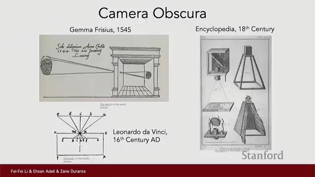
Humans have long been fascinated by the idea of building machines that can see. This curiosity laid the foundation for the development of devices designed to capture and project images, allowing us to better understand the world around us.
One of the earliest examples includes Leonardo Da Vinci's detailed studies of the camera obscura, a device that projects an image of its surroundings through a small hole onto a surface. Ancient thinkers also explored similar concepts, such as projecting images through pinholes, which helped inspire future innovations.
Although tools to capture images have existed for centuries, the real challenge lies in interpreting what is seen. This distinction highlights the difference between simply recording visual information and truly understanding it.
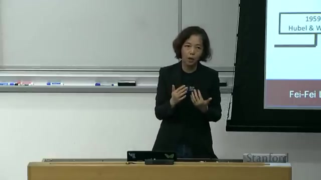
In the 1950s, pioneering neuroscience studies conducted on live cats revealed fascinating details about how the brain processes visual information. Researchers found that neurons in the primary visual cortex respond selectively to specific parts of the visual field and simple patterns such as edges.
These neurons are organized in a hierarchical manner, where simple features detected by early neurons combine to form more complex representations in deeper layers. This biological insight laid the foundation for modern neural network models in computer vision.
Understanding how the brain processes vision was crucial in designing more effective computer vision models. These neuroscience findings represent major milestones that have significantly influenced the field of artificial intelligence research.
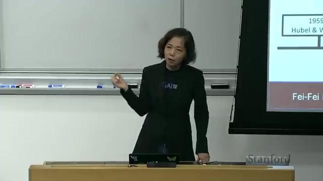
The journey of computer vision began with pioneering efforts in the 1960s. One of the earliest milestones was the first PhD thesis on shape representation completed in 1963. Around this time, researchers at MIT embarked on initial attempts to solve vision problems, laying the foundation for this challenging field.
A key development during this period was the introduction of generalized cylinders, a method to model 3D shapes using simplified structures. This concept helped researchers represent complex objects in a more manageable way, advancing the understanding of shape modeling.
Despite early optimism, the field soon faced significant hurdles. Vision problems proved to be far more difficult than anticipated. Cameras capture 2D images, but the real world is 3D, making interpretation complex and ambiguous.
This difficulty contributed to the onset of the AI winter, a time when enthusiasm and funding for AI research declined sharply. The slow progress led many to question the feasibility of achieving true machine vision in the near term.
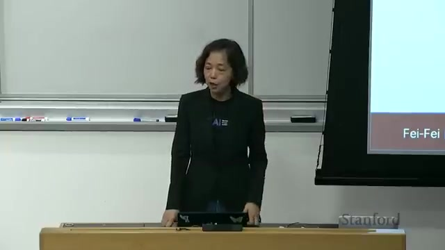
Human vision is remarkably fast and sophisticated, influenced not just by individual objects but by the entire scene we observe. Studies in cognitive science and neuroscience reveal that our brains quickly recognize objects and faces thanks to specialized brain areas, underscoring the complexity of visual processing beyond simple shapes.
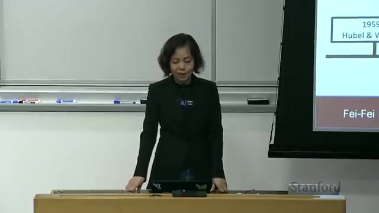
In the early 2000s, significant progress in computer vision was driven by innovations in feature detection methods and the explosion of available image data. Techniques like SIFT (Scale-Invariant Feature Transform) revolutionized how important points and patterns in images were identified and described, enabling more robust recognition across varying conditions.
At the same time, the rise of the internet and widespread adoption of digital cameras created massive datasets of images. These large-scale collections, such as ImageNet, became essential for training and testing advanced vision algorithms, pushing the field forward.
Data is as important as algorithms for making progress in computer vision. The combination of innovative feature detection methods and the availability of vast image datasets transformed the field.
The internet and digital cameras were true game changers, providing the volume and diversity of images necessary for training powerful vision models and enabling practical applications.
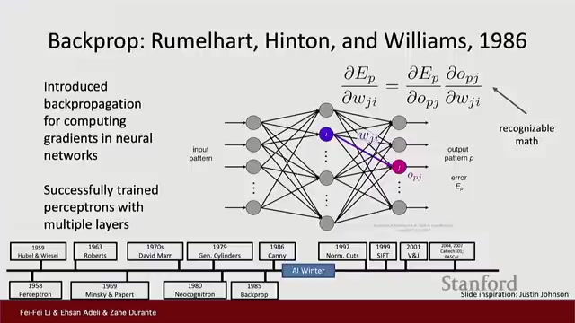
The history of neural networks in visual recognition began with early models that relied heavily on hand-designed parameters. A notable example is Fukushima's Neocognitron, which was inspired by the brain's visual system and featured multiple layers crafted manually by researchers.
In 1986, a major advancement came with the introduction of backpropagation, a powerful learning method that allowed neural networks to automatically adjust their parameters by retracing errors from the output layer back through the network layers. This innovation marked a turning point, enabling networks to learn directly from data rather than relying on manual tuning.
Following this breakthrough, Convolutional Neural Networks (CNNs) emerged as a practical architecture, particularly effective at image understanding. Early CNNs found real-world use cases such as digit recognition for postal codes, demonstrating their potential beyond theoretical models.
Data shortage was a significant bottleneck that limited the success of neural networks during this period. To truly understand and improve model performance, it is essential to grasp concepts like overfitting and generalization, which depend on both quality data and effective algorithms.
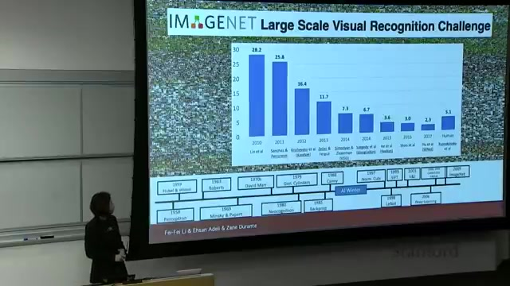
The creation of ImageNet marked a turning point in computer vision and artificial intelligence. This massive labeled image dataset contains over 15 million images spanning 22,000 categories, providing an unprecedented resource for training deep learning models.
One of the most significant milestones was the 2012 ImageNet Challenge, where the deep convolutional neural network known as AlexNet dramatically outperformed previous methods. This victory led to a substantial drop in error rates and is widely regarded as the birth of the modern deep learning era for computer vision.
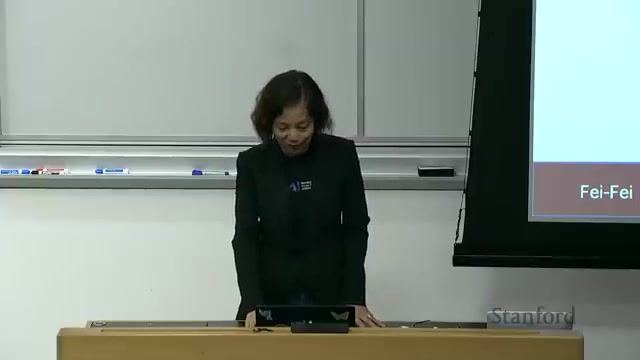
Modern computer vision has evolved far beyond simple image classification. Today, it encompasses a diverse set of complex tasks that enable machines to understand and interpret visual data with greater depth and precision.
As vision tasks become more sophisticated, several important ideas have emerged:
Despite remarkable progress, there are critical points to keep in mind:
Modern computer vision continues to push the boundaries of what machines can perceive and create, offering exciting possibilities while demanding thoughtful stewardship.
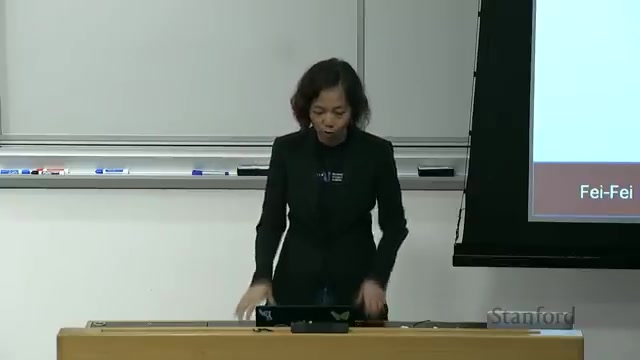
The field of Artificial Intelligence (AI) and computer vision is experiencing unprecedented growth. With a rapidly expanding community of contributors, advancements are accelerating at a remarkable pace.
The upcoming content will delve into the fundamentals of AI and computer vision, as well as outline the course structure to guide learners through this exciting domain.
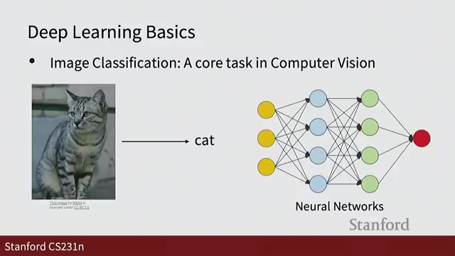
Professor Adelli introduces the course structure, which is designed to guide you through the essentials of deep learning and its application in computer vision. The course covers a broad range of topics including:
The fundamental task in computer vision is image classification, which involves assigning a label to an entire image. Beyond this, the course introduces more complex tasks such as:
Early lectures focus on fundamental concepts that are crucial for understanding advanced topics later in the course.
Regularization and optimization techniques are emphasized as essential tools to balance model fit and generalization, helping to prevent overfitting and underfitting.
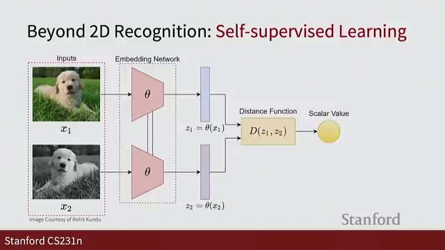
In this segment, we dive into several cutting-edge areas of artificial intelligence that are shaping the future of the field. The course will explore large-scale training techniques, including data parallelism and model parallelism, which are essential for efficiently training massive models.
We will also cover self-supervised learning, a powerful approach where models learn from unlabeled data by discovering inherent patterns. This leads naturally into generative models, which have the exciting capability to create new images and data. Examples include style transfer and diffusion models, the latter generating images by reversing a noise process.
Assignment three will provide a hands-on opportunity to implement a generative model, reinforcing the concepts learned.
Mastering large-scale training strategies is essential for anyone aiming to work with modern AI systems.
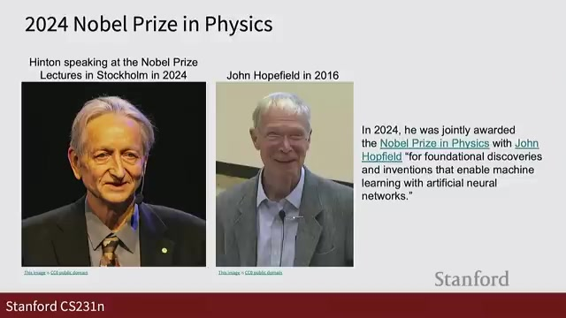
In this final discussion, we emphasize the importance of studying the human-centered and societal impact of AI and computer vision. This includes addressing critical ethical issues such as bias that can arise when AI systems reflect unfair prejudices present in their training data.
AI has the potential to bring about tremendous benefits, such as advancing medicine and improving everyday life. However, it also carries risks, including the possibility of making unfair decisions that affect individuals and communities.
Many significant breakthroughs in deep learning and neural networks have been recognized by prestigious awards such as the Turing Award and even the Nobel Prize. These honors highlight the lasting impact of pioneering work that has shaped modern AI and computer vision.
Generated automatically from lecture transcript and video analysis.